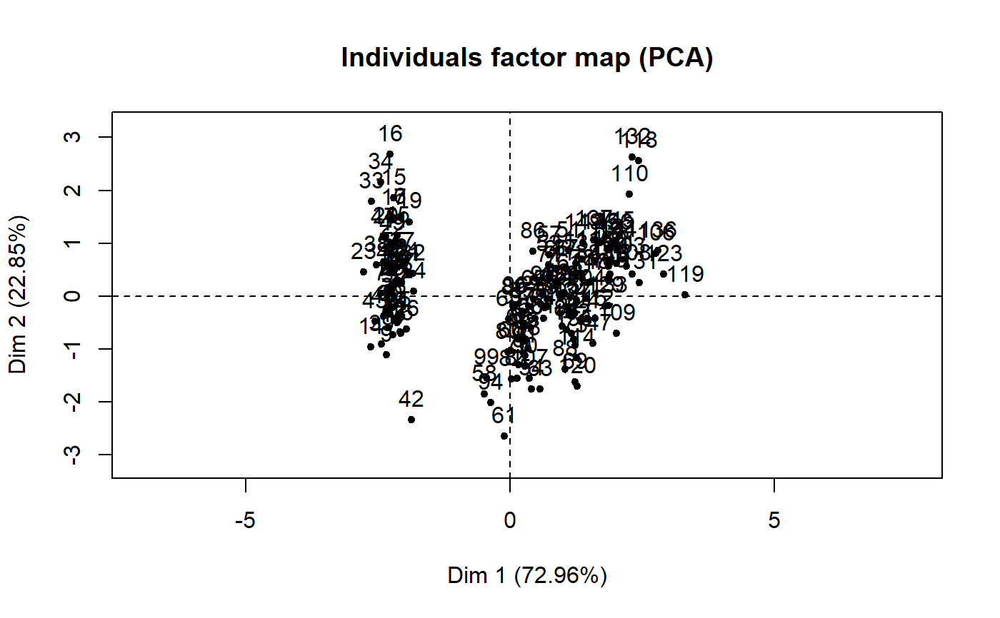
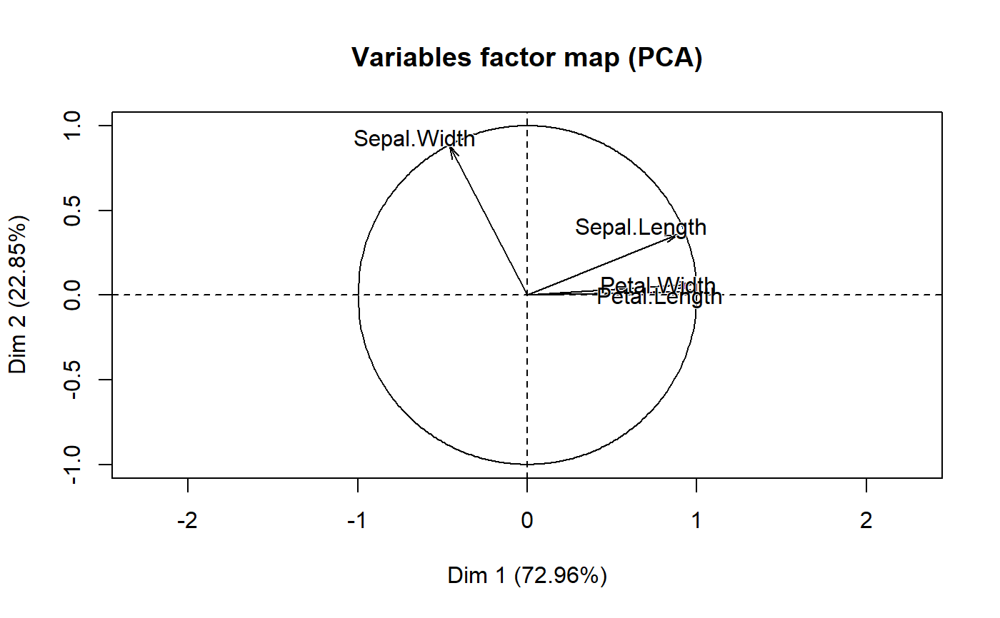
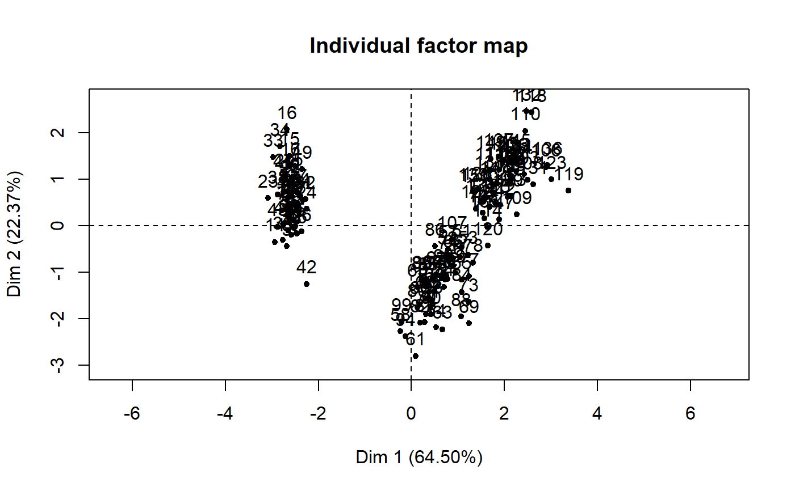
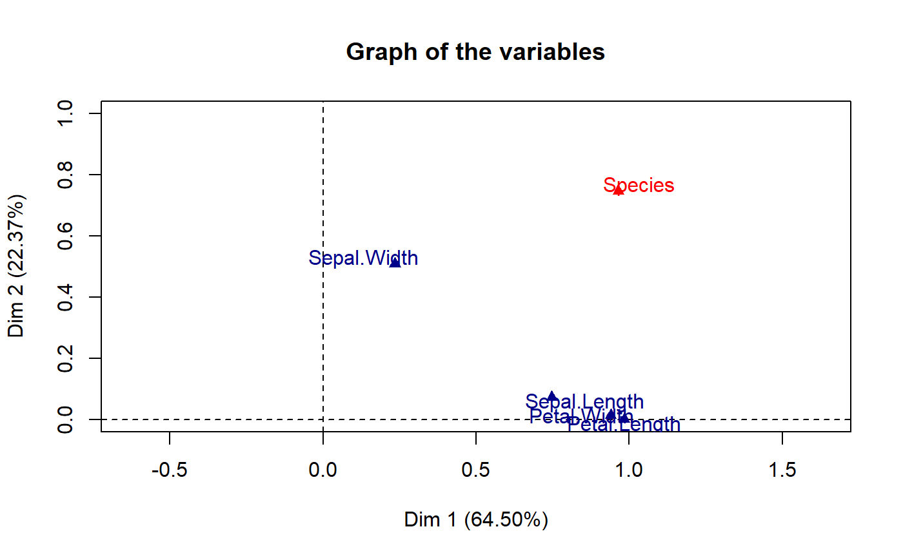
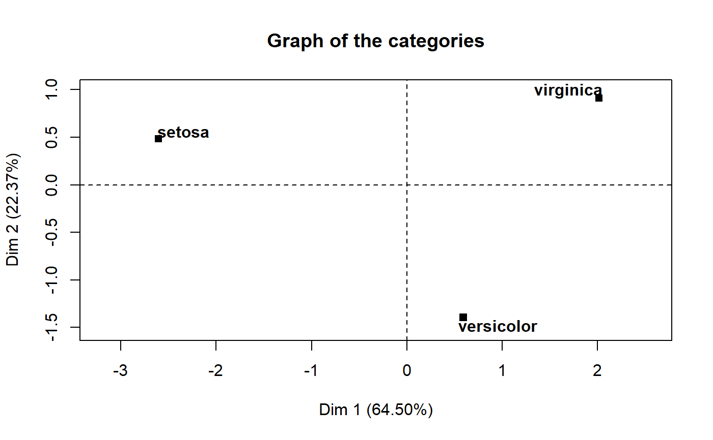
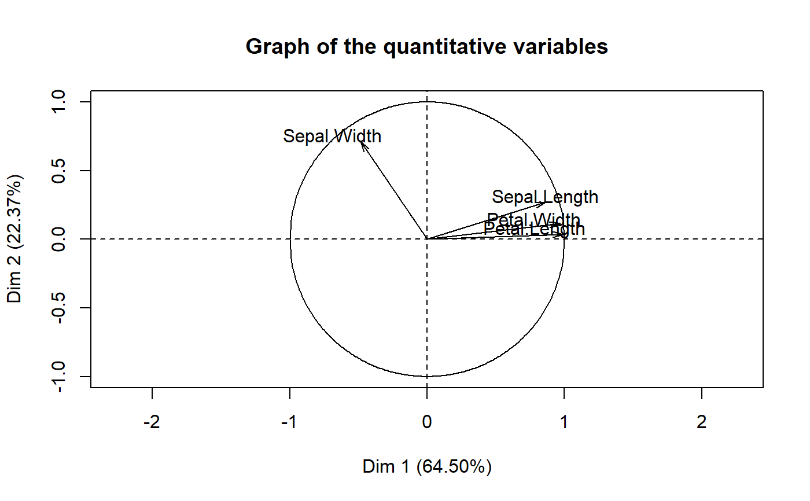

Structural Models (PCA, EFA, ...)
model_parameters.principal.RdFormat structural models from the psych or FactoMineR packages.
# S3 method for PCA model_parameters(model, sort = FALSE, threshold = NULL, labels = NULL, ...) # S3 method for principal model_parameters(model, sort = FALSE, threshold = NULL, labels = NULL, ...) # S3 method for omega model_parameters(model, sort = FALSE, threshold = NULL, labels = NULL, ...)
Arguments
| model | PCA or FA created by the psych or FactoMineR packages (e.g. through |
|---|---|
| sort | Sort the loadings. |
| threshold | A value between 0 and 1 indicates which (absolute) values from the loadings should be removed. An integer higher than 1 indicates the n strongest loadings to retain. Can also be "max", in which case it will only display the maximum loading per variable (the most simple structure). |
| labels | A character vector containing labels to be added to the loadings data. Usually, the question related to the item. |
| ... | Arguments passed to or from other methods. |
Value
A data.frame of loadings.
Details
For the structural models obtained with psych, the following indices are present:
Complexity (Hoffman's, 1978; Pettersson and Turkheimer, 2010) represents the number of latent components needed to account for the observed variables. Whereas a perfect simple structure solution has a complexity of 1 in that each item would only load on one factor, a solution with evenly distributed items has a complexity greater than 1.
Uniqueness represents the variance that is 'unique' to the variable and not shared with other variables. It is equal to
1 – communality(variance that is shared with other variables). A uniqueness of0.20suggests that 20% or that variable's variance is not shared with other variables in the overall factor model. The greater 'uniqueness' the lower the relevance of the variable in the factor model.
References
Pettersson, E., \& Turkheimer, E. (2010). Item selection, evaluation, and simple structure in personality data. Journal of research in personality, 44(4), 407-420.
Revelle, W. (2016). How To: Use the psych package for Factor Analysis and data reduction.
Examples
library(parameters) library(psych) # Principal Component Analysis (PCA) --------- pca <- psych::principal(attitude) model_parameters(pca)#> # Rotated loadings from Principal Component Analysis (varimax-rotation) #> #> Variable | PC1 | Complexity | Uniqueness #> ------------------------------------------- #> rating | 0.80 | 1.00 | 0.37 #> complaints | 0.85 | 1.00 | 0.28 #> privileges | 0.68 | 1.00 | 0.53 #> learning | 0.83 | 1.00 | 0.32 #> raises | 0.86 | 1.00 | 0.26 #> critical | 0.36 | 1.00 | 0.87 #> advance | 0.58 | 1.00 | 0.66 #> #> The unique principal component (varimax rotation) accounted for 53.09% of the total variance of the original data.pca <- psych::principal(attitude, nfactors = 3, rotate = "none") model_parameters(pca, sort = TRUE, threshold = 0.2)#> # Loadings from Principal Component Analysis (no rotation) #> #> Variable | PC1 | PC2 | PC3 | Complexity | Uniqueness #> ----------------------------------------------------------- #> raises | 0.86 | | | 1.10 | 0.22 #> complaints | 0.85 | -0.36 | 0.21 | 1.48 | 0.11 #> learning | 0.83 | | -0.30 | 1.27 | 0.23 #> rating | 0.80 | -0.42 | 0.24 | 1.74 | 0.13 #> privileges | 0.68 | | | 1.18 | 0.49 #> advance | 0.58 | 0.61 | -0.46 | 2.85 | 0.08 #> critical | 0.36 | 0.64 | 0.65 | 2.54 | 0.04 #> #> The 3 principal components accounted for 81.49% of the total variance of the original data (PC1 = 53.09%, PC2 = 16.30%, PC3 = 12.10%).#> # Loadings from Principal Component Analysis (no rotation) #> #> Variable | PC1 | PC2 | PC3 | Complexity #> ---------------------------------------------- #> raises | 0.86 | | | 1.10 #> complaints | 0.85 | -0.36 | 0.21 | 1.48 #> learning | 0.83 | | -0.30 | 1.27 #> rating | 0.80 | -0.42 | 0.24 | 1.74 #> privileges | 0.68 | | | 1.18 #> advance | 0.58 | 0.61 | -0.46 | 2.85 #> critical | 0.36 | 0.64 | 0.65 | 2.54 #> #> The 3 principal components accounted for 81.49% of the total variance of the original data (PC1 = 53.09%, PC2 = 16.30%, PC3 = 12.10%).# \donttest{ # Exploratory Factor Analysis (EFA) --------- efa <- psych::fa(attitude, nfactors = 3) model_parameters(efa, threshold = "max", sort = TRUE, labels = as.character(1:ncol(attitude)))#> # Rotated loadings from Principal Component Analysis (oblimin-rotation) #> #> Variable | Label | MR1 | MR2 | MR3 | Complexity | Uniqueness #> ----------------------------------------------------------------- #> complaints | 2 | 0.97 | | | 1.01 | 0.10 #> rating | 1 | 0.90 | | | 1.02 | 0.23 #> raises | 5 | 0.55 | | | 2.35 | 0.23 #> privileges | 3 | 0.44 | | | 1.64 | 0.65 #> advance | 7 | | 0.91 | | 1.04 | 0.22 #> learning | 4 | | 0.54 | | 2.51 | 0.24 #> critical | 6 | | | 0.48 | 1.46 | 0.67 #> #> The 3 latent factors (oblimin rotation) accounted for 66.60% of the total variance of the original data (MR1 = 38.19%, MR2 = 22.69%, MR3 = 5.72%).model_parameters(model)#> # Loadings from Principal Component Analysis (no rotation) #> #> Variable | Dim.1 | Dim.2 | Complexity #> ----------------------------------------- #> Sepal.Length | 0.89 | 0.36 | 1.32 #> Sepal.Width | -0.46 | 0.88 | 1.51 #> Petal.Length | 0.99 | 0.02 | 1.00 #> Petal.Width | 0.96 | 0.06 | 1.01 #> #> The 2 principal components accounted for 95.81% of the total variance of the original data (Dim.1 = 72.96%, Dim.2 = 22.85%).#> Dim.1 Dim.2 #> 1 -2.26470281 0.480026597 #> 2 -2.08096115 -0.674133557 #> 3 -2.36422905 -0.341908024 #> 4 -2.29938422 -0.597394508 #> 5 -2.38984217 0.646835383 #> 6 -2.07563095 1.489177523 #> 7 -2.44402884 0.047644198 #> 8 -2.23284716 0.223148073 #> 9 -2.33464048 -1.115327675 #> 10 -2.18432817 -0.469013561 #> 11 -2.16631010 1.043690653 #> 12 -2.32613087 0.133078335 #> 13 -2.21845090 -0.728676165 #> 14 -2.63310070 -0.961506729 #> 15 -2.19874060 1.860057113 #> 16 -2.26221453 2.686284485 #> 17 -2.20758770 1.483609363 #> 18 -2.19034951 0.488838316 #> 19 -1.89857200 1.405018794 #> 20 -2.34336905 1.127849382 #> 21 -1.91432300 0.408855708 #> 22 -2.20701284 0.924121427 #> 23 -2.77434470 0.458343668 #> 24 -1.81866953 0.085558526 #> 25 -2.22716331 0.137254455 #> 26 -1.95184633 -0.625618588 #> 27 -2.05115137 0.242163553 #> 28 -2.16857717 0.527149525 #> 29 -2.13956345 0.313217810 #> 30 -2.26526149 -0.337731904 #> 31 -2.14012214 -0.504540690 #> 32 -1.83159477 0.423695068 #> 33 -2.61494794 1.793575856 #> 34 -2.44617739 2.150727877 #> 35 -2.10997488 -0.460201841 #> 36 -2.20780890 -0.206107398 #> 37 -2.04514621 0.661558111 #> 38 -2.52733191 0.592292774 #> 39 -2.42963258 -0.904180040 #> 40 -2.16971071 0.268878961 #> 41 -2.28647514 0.441715388 #> 42 -1.85812246 -2.337415158 #> 43 -2.55363840 -0.479100690 #> 44 -1.96444768 0.472326668 #> 45 -2.13705901 1.142229262 #> 46 -2.06974430 -0.711052725 #> 47 -2.38473317 1.120429702 #> 48 -2.39437631 -0.386246873 #> 49 -2.22944655 0.997959764 #> 50 -2.20383344 0.009216358 #> 51 1.10178118 0.862972418 #> 52 0.73133743 0.594614726 #> 53 1.24097932 0.616297654 #> 54 0.40748306 -1.754403989 #> 55 1.07547470 -0.208421046 #> 56 0.38868734 -0.593283636 #> 57 0.74652974 0.773019312 #> 58 -0.48732274 -1.852429087 #> 59 0.92790164 0.032226078 #> 60 0.01142619 -1.034018275 #> 61 -0.11019628 -2.654072819 #> 62 0.44069345 -0.063295188 #> 63 0.56210831 -1.764724381 #> 64 0.71956189 -0.186224606 #> 65 -0.03335470 -0.439003210 #> 66 0.87540719 0.509063957 #> 67 0.35025167 -0.196311735 #> 68 0.15881005 -0.792095742 #> 69 1.22509363 -1.622243803 #> 70 0.16491790 -1.302609230 #> 71 0.73768265 0.396571562 #> 72 0.47628719 -0.417320281 #> 73 1.23417810 -0.933325729 #> 74 0.63285820 -0.416387721 #> 75 0.70266118 -0.063411820 #> 76 0.87427365 0.250793393 #> 77 1.25650912 -0.077256020 #> 78 1.35840512 0.331311682 #> 79 0.66480037 -0.225927855 #> 80 -0.04025861 -1.058718547 #> 81 0.13079518 -1.562271834 #> 82 0.02345269 -1.572475594 #> 83 0.24153827 -0.777256383 #> 84 1.06109461 -0.633843245 #> 85 0.22397877 -0.287773512 #> 86 0.42913912 0.845582241 #> 87 1.04872805 0.522051797 #> 88 1.04453138 -1.382988719 #> 89 0.06958832 -0.219503335 #> 90 0.28347724 -1.329324639 #> 91 0.27907778 -1.120028524 #> 92 0.62456979 0.024923029 #> 93 0.33653037 -0.988404018 #> 94 -0.36218338 -2.019237873 #> 95 0.28858624 -0.855730320 #> 96 0.09136066 -0.181192126 #> 97 0.22771687 -0.384920081 #> 98 0.57638829 -0.154873597 #> 99 -0.44766702 -1.543792034 #> 100 0.25673059 -0.598851796 #> 101 1.84456887 0.870421312 #> 102 1.15788161 -0.698869862 #> 103 2.20526679 0.562010477 #> 104 1.44015066 -0.046987588 #> 105 1.86781222 0.295044824 #> 106 2.75187334 0.800409201 #> 107 0.36701769 -1.561502891 #> 108 2.30243944 0.420065580 #> 109 2.00668647 -0.711438654 #> 110 2.25977735 1.921010376 #> 111 1.36417549 0.692756454 #> 112 1.60267867 -0.421700450 #> 113 1.88390070 0.419249651 #> 114 1.26011510 -1.162260421 #> 115 1.46764520 -0.442271587 #> 116 1.59007732 0.676244806 #> 117 1.47143146 0.255621824 #> 118 2.42632899 2.556661251 #> 119 3.31069558 0.017780949 #> 120 1.26376667 -1.706745380 #> 121 2.03771630 0.910467410 #> 122 0.97798073 -0.571764325 #> 123 2.89765149 0.413641060 #> 124 1.33323218 -0.481811219 #> 125 1.70073390 1.013921867 #> 126 1.95432671 1.007777596 #> 127 1.17510363 -0.316394472 #> 128 1.02095055 0.064346029 #> 129 1.78834992 -0.187361215 #> 130 1.86364755 0.562290726 #> 131 2.43595373 0.259284433 #> 132 2.30492772 2.626323468 #> 133 1.86270322 -0.178549495 #> 134 1.11414774 -0.292922623 #> 135 1.20247330 -0.811315271 #> 136 2.79877045 0.856803329 #> 137 1.57625591 1.068581107 #> 138 1.34629210 0.422430611 #> 139 0.92482492 0.017223100 #> 140 1.85204505 0.676128174 #> 141 2.01481043 0.613885637 #> 142 1.90178409 0.689575494 #> 143 1.15788161 -0.698869862 #> 144 2.04055823 0.867520601 #> 145 1.99814710 1.049168747 #> 146 1.87050329 0.386966082 #> 147 1.56458048 -0.896686809 #> 148 1.52117050 0.269069144 #> 149 1.37278779 1.011254419 #> 150 0.96065603 -0.024331668model_parameters(model)#> # Loadings from Principal Component Analysis (no rotation) #> #> Variable | Dim.1 | Dim.2 | Complexity #> ----------------------------------------- #> Sepal.Length | 0.75 | 0.07 | 1.02 #> Sepal.Width | 0.23 | 0.51 | 1.41 #> Petal.Length | 0.98 | 0.00 | 1.00 #> Petal.Width | 0.94 | 0.01 | 1.00 #> Species | 0.96 | 0.75 | 1.88 #> #> The 2 latent factors accounted for 86.87% of the total variance of the original data (Dim.1 = 64.50%, Dim.2 = 22.37%).